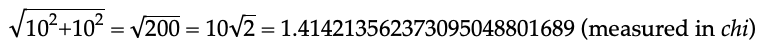
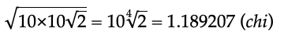
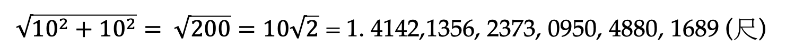
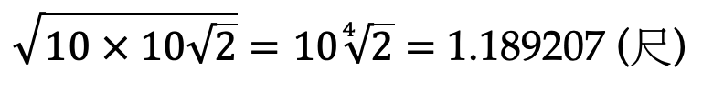
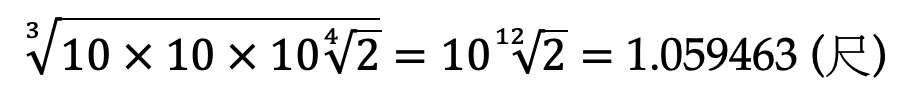

Mathematical
and Practical Aspects of Zhu Zaiyu’s Twelve-Tone Equal Temperament:
Perspectives from the Sinophone Literature
Jason Yin Hei Lee (McGill University)
Handout for the 2024 Meeting of the Society for Music Theory
10 November 2024
Example 1. Translation of Dai’s (1986, 67) explanation of Zhu’s calculations
Chi, the measurement of lengths, originates from the length of the pitch Huangzhong [C], so the length of Huangzhong is one chi. Let one chi2 (that is, 100 cun2) be the square of Huangzhong, then, according to the gougu theorem … the square of the hypotenuse would be 200 cun2. That is:

This value is at the same time the hypotenuse of the gougu square, the diameter of the square’s circumcircle, and the double of Ruibin [F♯]—we call that the length of the doubled Ruibin. Multiplying the sides of 10 cun and the doubled Ruibin and then taking the square root of this product, we get:

This is the value of the doubled Nanlü [A]. Multiplying the doubled Nanlü and two sides of 10 cun and then taking the cube root of this product, we get:

This is the value of the doubled Yingzhong [B]. The twelve tones begin with Huangzhong and ends with Yingzhong, cycling indefinitely. This is the truth of nature, as in the hexagrams of the I Ching … Therefore, to obtain the value of any of the twelve tones, one only needs to multiply the tone above [sic; should be below] it by 10 cun of Huangzhong, and then divide it by 10.59463… cun of the doubled Yingzhong, and the desired tone will be obtained. The same procedure applies to any of the other tones.
度量长度的标准尺是起源于黄钟律的长度，因此黄钟正律的长度、也就是长度标准的一尺。设一尺的平方（即100寸2）为黄钟正律的幂数，那么，如果依句股定律⋯⋯将句股二者幂数相加，得弦幂为200寸2。这样一来，

这个数值既是以句股为正方形的斜边，也是该正方形外接圆的直径，同时也是蕤宾正律的二倍、称为蕤宾倍率的长度。已句10寸乘蕤宾倍率，再将此乘积即平方数开平方，则得

该值为南吕倍率的数值。再将南吕倍率之值乘句10寸，乘股10寸，得三次乘积（即立方积）数值；然后将立方积开立方，得

该值为应钟倍率的数值。十二律黄钟为始，应钟为终，周而复始，循环不止。这是自然真理，就像《易经》八卦⋯⋯因此，如果要计算十二律中某律的数值，只要以比某率高一律的数值乘以黄钟正律10寸，再除以应钟倍率数，就可以得到某律。其他各律依此类推。
Example 2. Conversion between Chinese and Western pitch names: [1]
|
Chinese pitch name |
Western pitch name |
|
黃鐘 Huangzhong |
C |
|
大呂 Dalü |
C♯/D♭ |
|
太簇 Taicu |
D |
|
夾鐘 Jiazhong |
D♯/E♭ |
|
姑冼 Guxian |
E |
|
仲呂 Zhonglü |
F |
|
蕤賓 Ruibin |
F♯/G♭ |
|
林鐘 Linzhong |
G |
|
夷則 Yize |
G♯/A♭ |
|
南呂 Nanlü |
A |
|
無射 Wuyi |
A♯/B♭ |
|
應鐘 Yingzhong |
B |
Example 3. Translation of Dai’s (1986, 202) discussion of Zhu’s use of the principle of geometric sequence
Although Zhu does not explicitly express twelve-tone equal temperament in the language of geometric sequence but with other mathematical languages, it is unquestionable that he has based his calculations on geometric sequences, and that his calculations have fully exemplified the rationale behind solving geometric sequences.
虽然朱载堉没有明确以等比数列的语言，而是以别的数学语言定义十二平均率，但是他以等比数列求解十二平均率的方法，他的十二平均率定义中包含的等比数列的意义是毫无疑问的。
Example 4. Translation of Li and Zhu’s (1985, 20) justification for the interchange of units in Zhu’s calculation
If we take Huangzhong as 10 cun and doubled Huangzhong as 20 cun [instead of 1 chi and 2 chi respectively], then we will not arrive at the value of doubled Ruibin by directly taking the square root [of doubled Huangzhong]: i.e., √20 = 4.472136, which is not the value of doubled Ruibin. The calculations must then be completed with methods for solving geometric sequences. Zhu’s conversion of chi into cun, mathematically speaking, equals setting Huangzhong as [a variable] for deriving the formulas for any value of Huangzhong.
若以黄钟为十寸，倍黄为20寸，直接用“开平方法”，則不能求出倍蕤之值，如：√20 = 4.472136，並非倍蕤之值。须用求比例中项之法才能求出。朱氏化尺為寸，从数学的意义上讲，即等于设黄钟为a， 来进一步探求黄钟为任一长度之计算公式。
Example 5. Translation of Miao’s (1996, 115) description of the solutions to the problem of xuangong
The first solution is, using the principle of sanfen sunyi, to continue the generation of pitches beyond the twelve tones. Some systems have extended the generation to sixty tones, and some even to 360 tones. … Another solution to the problem is to adjust the pitch heights within the twelve-tone system, such that the last of the twelve tones can return to the starting pitch.
一类的解决办法是，在三分损益法相生到十二律之后，再继续往下生，有的生到六十律， 有的竟生到三百六十律。⋯⋯ 另一类的解决办法是，在十二律本身内调整各律的高度，使十二律中最后一律能回到出发的律上。
Example 6. Translation of Sun’s (1987, 95) description of the sheng’s reliability as a tuning instrument
Among our country’s [i.e., China’s] folk instruments, only the sheng and the yangqin can have a predetermined tuning that is fixed in performance and unaffected by the manner of performance. These two instruments can not only be tuned precisely, but they can also produce such precisely tuned pitches invariably during performance.
在我国的民族乐器中，能够调准某种律制的音高，在演奏中又不受演奏方法的影响并可做到音高不变动的乐器，大约只有笙和扬琴，这两种乐器不但可以调出准确的音高，而且在演奏中也可不变化地去使用所调出来的音高。
Example 7. Translation of Sun’s (1987, 95) report of Zhu’s preference for sheng makers
Zhu Zaiyu has also noticed that, because of their ample experience in tuning [their instruments], sheng makers can act as the tuner to implement twelve-tone equal temperament. Therefore, he has a particular interest and trust in sheng makers. From the beginning of the process of judging his New Method [i.e., twelve-tone equal temperament], he reminds people to rely greatly on the judgments of sheng makers. He says, “In this world, only sheng makers have considerable knowledge about tuning. Because of polyphony on the sheng, were it not for the knowledge about tuning, sheng makers would not be able to tune the instrument. In order to determine if the New Method sounds right, one makes the judgment by relying on these men.” (Book I, Lüxue xinshuo)
朱载堉还注意到了由于点笙匠具有丰富的调音经验，可以作为调律者去实现十二平均律的调律。因此，他对点笙匠也有着特殊的兴趣和信任。从审听新律起，他就提醒人们要充分依赖点笙匠的判断。他说“ 世间惟点笙匠颇能知音。盖笙簧之子母配合， 若非知添则不能调。 欲审新律协否，赖此辈以决之。” (《律学新说》卷一)
Bibliography
Dai, Nianzu 戴念祖. 1986. 朱载堉—明代的科学和艺术巨星 [Zhu Zaiyu: Scientific and Artistic Superstar of the Ming Dynasty]. Beijing: 人民出版社 Renmin.
Guo, Keque 郭可悫. 2012. “明朝宗室朱载堉的音乐舞蹈研究 [A Study of Music and Dance of the Ming Prince Zhu Zaiyu].” 濮阳职业技术学院学报 Journal of Puyang Vocational and Technical College 25 (2): 39–41.
Guo, Shuqun 郭树群. 1993. “论朱载堉的旋宫思想 [On Zhu Zaiyu’s Thinking on Xuangong].” 音乐研究 Music Research, no. 4: 44–53.
———. 1994. “朱载堉的音乐实践对其‘新法密率’的影响 [The Effect of Zhu Zaiyu’s Musical Practice on His ‘New Method’].” 中国音乐学 Musicology in China, no. 2: 25–31.
Huang, Guoxi 黄国玺. 1986. “朱载堉十二平均律理论创建中的律学数学方法 [Mathematical Methods in Zhu Zaiyu’s Construction of Twelve-Tone Equal Temperament].” 音乐探索 Explorations in Music, no. 4: 19–24.
———. 1998. “朱载堉十二平均律新法密率数学理论的逻辑起点—率 [Ratios as the Logical Basis of Zhu Zaiyu’s Mathematical Theory of Twelve-Tone Equal Temperament],” 音乐探索 Explorations in Music, no. 3: 7–11.
Jiang, Lihong, and Mingshan Ren. 2023. A General Theory of Ancient Chinese. Translated by Ye Zhu and Wenyan Gao. Singapore: Zhejiang University Press and Springer.
Kuttner, Fritz A. 1975. “Prince Chu Tsai-Yü’s Life and Work: A Re-Evaluation of His Contribution to Equal Temperament Theory.” Ethnomusicology 19 (2): 163–206. https://doi.org/10.2307/850355.
Lam, Nathan L. 2024. “Pentatonic Xuangong 旋宮 Transformations in Chinese Music.” Music Theory Online 30 (1). https://mtosmt.org/issues/mto.24.30.1/mto.24.30.1.lam.html.
Li, Wuhua 李武华, and Enkuan 朱恩宽 Zhu. 1985. “十二平均律的发明者—朱载堉 [Zhu Zaiyu the Inventor of Twelve-Tone Equal Temperament].” 中国音乐 Chinese Music, no. 1: 19–20.
Liu, Fu 劉復. 1933. “十二等律的發明者朱載堉 [Zhu Zaiyu the Inventor of Twelve-Tone Equal Temperament].” In 慶祝蔡元培先生六十五歲論文集 Studies Presented to Ts’ai Yuan P’ei on His Sixty-Fifth Birthday, 1:279–310. Peiping: 國立中央研究院歷史語言研究所 The National Research Institute of History and Philology.
Lu, Min 陆敏. 1956. “朱载堉和十二平均律 [Zhu Zaiyu and Twelve-Tone Equal Temperament].” 人民音乐 People’s Music, no. 11: 21–23.
Martin, Nathan John. 2022. “Toward a ‘Global’ History of Music Theory.” Journal of Music Theory 66 (2): 147–87. https://doi.org/10.1215/00222909-9930876.
Miao, Tianrui 缪天瑞. 1996. 律学 [The Study of Tuning and Temperament]. 3rd ed. Beijing: 人民音乐出版社 Renmin Yinyue.
Peng, Bei. 2023. “On the Western Reception of Prince Zhu Zaiyu’s Music Theory from the Eighteenth to the Twentieth Century.” International Communication of Chinese Culture 10 (2): 133–49. https://doi.org/10.1007/s40636-023-00272-w.
Peyraube, Alain. 2016. “Ancient Chinese.” In The Routledge Encyclopedia of the Chinese Language, edited by Sin-Wai Chan, 1–17. London and New York: Routledge.
Rasch, Rudolf. 2008. “Simon Stevin and the Calculation of Equal Temperament.” In Music and Mathematics, edited by Philippe Vendrix, 253–320. Turnhout: Brepols.
Rehding, Alexander. 2016. “Instruments of Music Theory.” Music Theory Online 22 (4). https://mtosmt.org/issues/mto.16.22.4/mto.16.22.4.rehding.html.
———. 2020. “Can the History of Theory Be Decentered? (In Five Parts).” History of Music Theory: SMT Interest Group & AMS Study Group (blog). April 3, 2020. https://historyofmusictheory.wordpress.com/2020/04/03/can-the-history-of-theory-be-decentered-part-i-prequel-five-classics/.
———. 2022. “Fine-Tuning a Global History of Music Theory: Divergences, Zhu Zaiyu, and Music-Theoretical Instruments.” Music Theory Spectrum 44 (2): 260–75. https://doi.org/10.1093/mts/mtac004.
Shi, Xuegong 石学功. 2017. “朱载堉乐律学研究综述 [An Overview on Zhu Zaiyu’s Theory of Tuning and Temperament].” 星海音乐学院学报 Journal of Xinghai Conservatory of Music 2: 147–54. https://doi.org/10.3969/j.issn.1008-7389.2017.02.017.
Sun, Xuanling 孙玄龄. 1987. “对朱载堉实践十二平均律的探讨 {An Investigation of Zhu Zaiyu’s Application of Twelve-Tone Equal Temperament].” 中国音乐学 Musicology in China, no. 1: 93–99.
Tian, Zhonghua 田中华. 2004. “《神道碑》与朱载堉生平考述 [The Shendao Monument and a Study of Zhu Zaiyu’s Biography].” 中国科技史料 China Historical Materials of Science and Technology 25 (4): 334–44.
Woo, Shingkwan. 2017. “The Ceremonial Music of Zhu Zaiyu.” PhD diss., Rutgers, The State University of New Jersey.
Xu, Fei 徐飞. 1994. “朱载堉十二平均律算法考 [An Investigation of Zhu Zaiyu’s Calculation of Twelve-Tone Equal Temperament].” 音乐探索 Explorations in Music, no. 4.
Yang, Yinliu 楊蔭瀏. 1937. “平均律算解：律呂攷之一 An Account of the Efforts of Chinese Scholars towards the Solution of the Problem of the Equal Tempered Scale in Chinese Music.” 燕京學报 Yenching Journal of Chinese Studies 21: 2–60.
———. 1982. “三律考 [On the Three Temperament Systems].” 音乐研究 Music Research, no. 1: 30–39.
Zhu, Zaiyu 朱載堉. 1584. 律學新說 [Lüxue Xinshuo]. https://curiosity.lib.harvard.edu/chinese-rare-books/catalog/49-990079072700203941.
———. 1596. 律呂精義 [Lülü Zingyi]. https://zh.wikisource.org/wiki/%E5%BE%8B%E5%91%82%E7%B2%BE%E7%BE%A9.